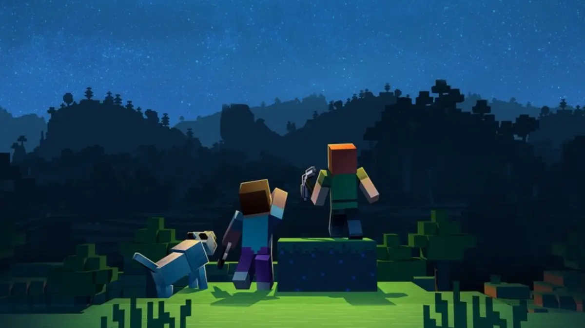

⛏MINECRAFT💎
Minecraft es un videojuego sandbox enfocado en permitirle al jugador explorar y modificar un mundo generado dinámicamente hecho de bloques de un metro cúbico. Es mantenido por Mojang Studios, que forma parte de Xbox Game Studios, que a su vez es parte de Microsoft. Desde su creación, Minecraft fue desarrollado casi exclusivamente por Notch hasta que Jens "Jeb" Bergensten comenzó a trabajar en él y desde entonces se ha convertido en el responsable de su desarrollo. Cuenta con música de Daniel "C418" Rosenfeld y de Lena Raine y cuadros de Kristoffer Zetterstrand. La versión inicial, conocida actualmente como Minecraft Classic, fue publicada el 17 de mayo de 2009. La versión completa del juego se publicó el 18 de noviembre de 2011. Desde su lanzamiento, Minecraft se ha ampliado a dispositivos móviles y consolas. El 6 de noviembre de 2014 Microsoft adquirió Minecraft y todos los activos de Mojang Studios por 2.500 millones de dólares estadounidenses. Desde entonces, Notch dejó Mojang y ya no trabaja en Minecraft.

Minecraft se enfoca en permitirle al jugador explorar, interactuar con y modificar un mundo generado dinámicamente hecho de bloques de un metro cúbico. El entorno también contiene plantas, criaturas, y objetos. Algunas actividades en el juego incluyen minar por menas, pelear contra criaturas hostiles, y fabricar nuevos bloques y herramientas al obtener varios recursos encontrados en el juego. El modelo de abierto-cerrado del juego le permite a los jugadores crear estructuras, creaciones, y arte en varios servidores multijugador o sus mapas de un jugador. Otras características incluyen circuitos de redstone para mecanismos lógicos y acciones remotas, vagonetas y caminos, y un misterioso sub-mundo llamado el Nether. Una meta diseñada pero completamente opcional del juego es viajar a una dimensión llamada el End, y derrotar al Enderdragón.
El jugador es la persona controlada por el usuario dentro del mundo virtual. Cuando el usuario comienza una partida, el jugador entrará en un mundo generado a partir de una semilla, con un inventario vacío. Si la opción de cofre de bonificación está habilitada, se genera un cofre lleno de objetos básicos cerca del jugador. El jugador tiene una barra de salud con 10 corazones y puede sufrir daños por caídas, asfixia, ahogamiento, fuego, lava, relámpagos, cactus, arbustos de bayas dulces, caídas al Vacío, yunques que caen y ser golpeado por criaturas y otros jugadores. El daño a la salud se puede reducir con una armadura o una poción de resistencia y la salud se puede restaurar comiendo alimentos y bebiendo pociones específicas, o si la dificultad se establece en Pacífica, la salud se regenera por sí sola. El hambre también es un factor si la dificultad no se establece en Pacífica, se agota con el tiempo e incluso más rápido al correr, saltar o nadar. La comida repone el nivel de hambre; sin embargo, comer carne podrida y pollo crudo tiene la posibilidad de provocar un efecto de hambre en el jugador. Dependiendo del nivel de dificultad, la inanición agota la salud de un jugador e incluso puede matarlo.

Christian Solis Lara